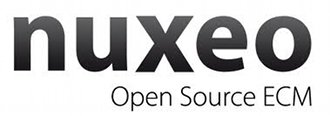

DORM est cofinancé par l’Union européenne. L’Europe s’engage en Ile de France avec le Fonds européen de
développement régional.
DORM est cofinancé par l’Union européenne. L’Europe s’engage en Ile de France avec le Fonds européen de
développement régional.
DORM
DORM (Derived Object Repository Manager) est un outil de stockage des artefacts binaires issus d'une chaîne de build.
Description
DORM est basé sur les outils Apache Archiva et Apache Ivy développés comme leur nom l'indique par la Fondation Apache. Tous les développements du projet DORM sont effectués avec des licences libres ou open-source compatibles avec les projets d'origine. Le développement est destiné à être réintégré à 100%.
Voici les liens vers les sources de chaque sous-partie du projet:
- Apache Archiva
- Apache Ivy
DORM est co-développé par un Consortium de quatre acteurs:
|  |